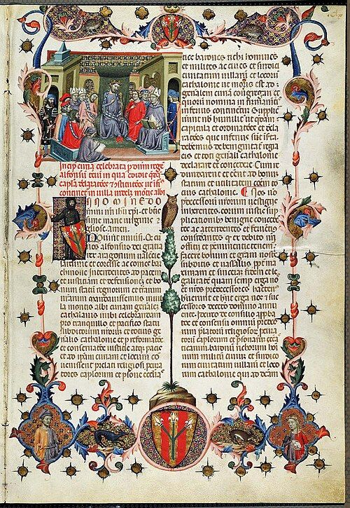

Las leyes esperan 20 días
Si una ley no dice otra cosa, entra en vigor a los 20 días de publicarse completa en el boletín oficial. Es la vacatio legis, el tiempo para que todos podamos conocerla.
De dónde vienen nuestras leyes y quién las hizo.

Trece épocas y más de cuarenta personajes con su ficha y su retrato.
Abrir la enciclopediaSi una ley no dice otra cosa, entra en vigor a los 20 días de publicarse completa en el boletín oficial. Es la vacatio legis, el tiempo para que todos podamos conocerla.
En 1913 dos hombres fueron condenados por matar a un pastor desaparecido en Osa de la Vega (Cuenca). Habían confesado bajo torturas. En 1926 el «muerto» reapareció vivo. El Tribunal Supremo anuló la condena y el caso se convirtió en el gran ejemplo de error judicial en España.
«Alcalde» viene del árabe al-qadi, el juez. Durante siglos los alcaldes de las villas castellanas sobre todo juzgaban pleitos. «Alguacil» también viene del árabe: al-wazir, el ministro.
Saber másLa ética y la moral tienen ahora sus propias secciones: Ética · Moral.